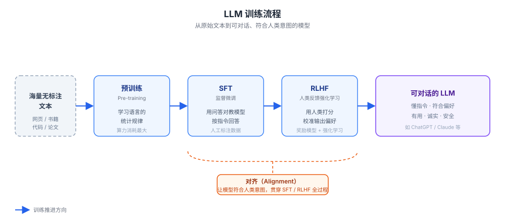

大模型相关概念
刚接触大模型（LLM）开发时，会有一堆新词扑面而来：Token、RAG、Embedding、Agent……，它们看起来彼此独立，其实串成了一条完整的技术链路。
本文按照「模型是什么 → 如何训练 → 如何使用 → 如何优化」的顺序，把这些概念串起来，帮初学开发者建立清晰的知识框架。
本文不只是「名词解释」，还会用真实可运行的 Python 代码演示这些概念怎么落地。
所有示例基于 OpenAI 兼容协议，可换成阿里云百炼、DeepSeek 等服务商只需改接口地址和密钥。
Python OpenAI 参考：https://www.runoob.com/python3/python-openai.html
整体技术链路
在拆解每个概念之前，先看一眼大模型技术的完整链路，建立整体认知。
从上到下，每一层都解决一类核心问题：训练造出模型、优化让它变轻、驱动让它出活、检索补上知识、工具让它执行。

下文就按这条链路，自顶向下逐层展开。
基础概念：模型是什么
这一节回答最根本的问题：大模型到底是个什么东西，它靠什么工作。
LLM（大语言模型）
LLM 全称 Large Language Model，是基于海量文本训练出来的深度学习模型。
它的本质是一个「预测下一个词」的概率模型：给定前面的文字，预测接下来最可能出现的内容。
ChatGPT、Claude、通义千问等产品，底层都是 LLM。
Transformer 与注意力机制
几乎所有现代 LLM 都基于 Transformer 架构。
它的核心创新是注意力机制（Attention / Self-Attention）：模型在处理某个词时，能动态地「关注」输入序列中其他相关的词，从而更好地理解上下文关系。
打个比方，模型读一句话时不是死板地逐字扫描，而是会自动判断「这个词和前面哪个词关系最大」。
Token（词元）
模型并不按「字」或「单词」处理文本，而是按 Token 处理。
一个 Token 可能是一个汉字、一个英文单词，也可能是单词的一部分。
理解 Token 有两个直接的现实意义：
模型的上下文长度限制是按 Token 计算的；API 调用的计费也是按 Token 计算的。
用 OpenAI 的开源分词库 tiktoken，可以直接看到一段文本被切成了多少个 Token：
实例
import tiktoken
# 不同模型使用不同分词器，encoding_for_model 会自动选对应的
enc = tiktoken.encoding_for_model("gpt-4o-mini")
tokens = enc.encode("Hello world") # 把文本切成 Token 列表
print("Token 数量：", len(tokens))
print("切分结果：", [enc.decode([t]) for t in tokens])
输出结果：
Token 数量：2 切分结果：['Hello', ' world']
换成中文或更长的词，切分方式会完全不同，所以「按字数估算 Token」并不准确。
上下文窗口（Context Window）
指模型一次能「看到」和处理的最大 Token 数量。
比如上下文窗口是 100K，意味着一次对话（历史消息、你的问题、模型回答加在一起）不能超过 10 万个 Token。
窗口越大，模型能「记住」的内容越多，能一次性处理的文档也越长。
参数量（Parameters）
参数量指模型内部可学习的权重数量，通常以 B（十亿，Billion）为单位，比如 7B、70B。
它在一定程度上反映模型的规模与能力上限，但不是唯一指标——训练数据质量、架构设计同样关键。
| 常见参数量 | 量级 | 典型定位 |
|---|---|---|
| 1B ~ 7B | 小到中 | 可在消费级显卡本地运行，适合轻量任务 |
| 8B ~ 34B | 中 | 性价比高，覆盖大多数通用场景 |
| 70B ~ 数百 B | 大 | 能力最强，通常通过云端 API 调用 |
模型是如何训练出来的
一个能自然对话的 LLM，通常要经过多个训练阶段，层层叠加能力。

预训练（Pre-training）
模型在海量、无标注的文本（网页、书籍、代码等）上学习语言的统计规律，比如语法、常识、逻辑关系。
这个阶段耗费的算力最大，是模型能力的基础。
但此时的模型还不擅长「按指令做事」，更像一个博览群书却不懂如何交流的人。
SFT（监督微调）
SFT 全称 Supervised Fine-Tuning。
用人工标注好的「问题—答案」对数据，教模型学会按照人类指令来回答问题，而不是自顾自地续写文本。
RLHF（人类反馈强化学习）
RLHF 全称 Reinforcement Learning from Human Feedback。
让人类对模型的多个候选回答打分或排序，再用这些反馈训练模型，使其输出更符合人类偏好（更有用、更诚实、更安全）。
类似的技术还有 RLAIF：用 AI 代替人类打分，以降低标注成本。
两者目的一致，区别只在于「打分的人」是真人还是另一个 AI。
对齐（Alignment）
对齐是一个更宏观的概念：让模型的行为、价值观符合人类的期望和意图。
它是 AI 安全领域的核心议题，贯穿在 SFT、RLHF 等各个训练环节中——SFT 和 RLHF 本质上都是「对齐手段」。
微调（Fine-tuning）
在已经训练好的通用模型基础上，用某个特定领域（如法律、医疗、客服）的数据继续训练。
相比从零预训练，微调成本要低得多，是让通用模型适配专业场景的常用做法。
MoE（混合专家模型）
MoE 全称 Mixture of Experts，是一种模型架构设计。
模型内部包含多个「专家」子网络，每次处理输入时只激活其中一部分，而不是让全部参数都参与计算。
这样可以在扩大模型总规模的同时，控制实际计算量，做到「参数大、推理快」。
| 训练阶段 | 英文 | 主要作用 | 依赖的数据 |
|---|---|---|---|
| 预训练 | Pre-training | 学习语言规律，打下能力基础 | 海量无标注文本 |
| 监督微调 | SFT | 学会按指令回答问题 | 人工标注的问答对 |
| 人类反馈强化学习 | RLHF | 输出更符合人类偏好 | 人类对回答的打分/排序 |
| 对齐 | Alignment | 让模型有用、诚实、安全 | 贯穿上述各阶段 |
开发者如何使用大模型
这是初学开发者最需要关注的部分：如何通过 API 让大模型为应用服务。
本节先给一个最基础、可直接运行的对话调用示例，再展开各概念。
最基础的 API 对话调用
下面这段代码演示一次完整的对话请求，同时用到了 System Prompt、用户消息和温度三个概念。
实例
from openai import OpenAI
import os
# 创建客户端。OpenAI 兼容协议的服务都能复用这段代码，
# 换成其它服务商只需改 api_key 与 base_url
client = OpenAI(
api_key=os.getenv("OPENAI_API_KEY"), # 从环境变量读取密钥（必填）
)
# 发起一次对话请求
response = client.chat.completions.create(
model="gpt-4o-mini", # 模型名称（必填），按所用服务商更换
messages=[
# System Prompt：预先设定模型的角色与行为规范
{"role": "system", "content": "你是一名专业的 Python 编程助手，只回答技术相关问题。"},
# 用户消息：实际的问题
{"role": "user", "content": "什么是 runoob？"},
],
temperature=0.7, # 生成温度，取值 0~2，越大越发散（见下文）
)
# 打印模型回答
print("回答：", response.choices[0].message.content)
# usage 字段记录了这次调用消耗的 Token 数（计费依据）
print("输入 Token 数：", response.usage.prompt_tokens)
print("输出 Token 数：", response.usage.completion_tokens)
输出结果：
回答：runoob（菜鸟教程）是一个提供编程教程的中文学习网站…… 输入 Token 数：33 输出 Token 数：18
返回结构里的 usage 字段就是上文 Token 概念的落地：它告诉你这次调用消耗了多少 Token，也是计费的依据。
Prompt（提示词）
Prompt 是你输入给模型的指令或问题，直接决定模型输出的质量。
研究如何写出更清晰、更有效 Prompt 的技巧，叫做提示词工程（Prompt Engineering）。
常见手法包括：给出具体示例、要求分步骤思考、指定输出格式等。
System Prompt（系统提示词）
在用户正式输入之前，预先设定给模型的指令，用来定义模型的角色、行为规范、背景知识。
上文示例里的「你是一名专业的 Python 编程助手，只回答技术相关问题」就是典型的 System Prompt。
System Prompt 与用户消息的区别：System Prompt 设定「模型该怎么做」，用户消息提出「具体要做什么」。
把通用规范放进 System Prompt，能让多轮对话的回答风格保持一致。
温度（Temperature）
温度是控制模型输出随机性的参数，取值范围一般是 0 到 2。
温度越高，回答越「有创意」、越随机，也越容易出错；温度越低，回答越保守、越稳定。
| 取值范围 | 输出特点 | 适用场景 |
|---|---|---|
| 接近 0 | 几乎确定、稳定可复现 | 写代码、数据提取、事实问答 |
| 0.3 ~ 0.7 | 有一定变化但可控 | 通用对话、翻译、摘要 |
| 0.8 ~ 1.2 | 富有创意、多样 | 头脑风暴、文案、故事创作 |
| 大于 1.2 | 高度随机，容易跑偏 | 谨慎使用，仅特殊创意场景 |
上下文学习（In-Context Learning）
不需要对模型做任何微调，只要在 Prompt 里提供几个示例，模型就能「照猫画虎」完成新的类似任务。
这是 Prompt Engineering 中最常用的技巧之一，也叫 Few-shot Learning（少样本学习）。
思维链（Chain-of-Thought, CoT）
引导模型把复杂问题拆解成一步步的推理过程，再给出最终答案，而不是直接跳到结论。
实践证明，这种方式能显著提升模型在数学、逻辑推理等复杂任务上的准确率。
最简单的做法是在 Prompt 中加一句「请一步步思考」。
幻觉（Hallucination）
幻觉指模型生成看似合理、语言流畅，但实际上错误或凭空编造的内容。
这是 LLM 目前普遍存在的缺陷，原因是模型本质上在「续写最可能的文字」，而不是「查证事实」。
缓解幻觉的核心手段之一就是下文的 RAG：先检索真实资料，再让模型基于资料作答。
让模型连接外部世界
单纯的 LLM 只能依赖训练时学到的知识回答问题，既不知道最新信息，也无法主动做事。
本节这些技术，就是解决这两个短板的关键。
Embedding（嵌入）
Embedding 把文字、图片等内容转换成一串数字（向量）。
转换后，计算机就能通过计算向量之间的距离，判断两段内容在「语义」上是否相似。
这是搜索、推荐、RAG 等应用的底层基础。
向量数据库
向量数据库专门用来存储和检索 Embedding 向量，比如 Pinecone、Milvus、Chroma。
它能在海量向量中快速找到与查询语义最相似的内容，是构建 RAG 系统必不可少的组件。
RAG（检索增强生成）
RAG 全称 Retrieval-Augmented Generation。
它的工作流程是：先把外部知识库转成向量存进向量数据库；用户提问时检索出最相关的内容；再把检索结果连同问题交给模型生成答案。
RAG 能有效缓解幻觉，并让模型回答训练数据之外的新知识。

下面是一个不依赖外部向量库、用 OpenAI Embedding 加 numpy 实现的最小 RAG 示例，方便理解原理：
实例
from openai import OpenAI
import numpy as np
import os
client = OpenAI(api_key=os.getenv("OPENAI_API_KEY"))
# 模拟一个很小的"知识库"：几段文档
documents = [
"runoob 是一个提供编程教程的中文学习网站。",
"RAG 通过检索真实资料再生成，能有效减少大模型的幻觉。",
"Python 使用缩进来表示代码块，通常建议每级缩进 4 个空格。",
]
# 第一步：把知识库向量化（离线建库，只需做一次）
doc_resp = client.embeddings.create(input=documents, model="text-embedding-3-small")
doc_vectors = [d.embedding for d in doc_resp.data]
# 第二步：把用户问题向量化
question = "什么是 runoob？"
query_vector = client.embeddings.create(
input=question, model="text-embedding-3-small"
).data[0].embedding
# 第三步：用余弦相似度找出最相关的文档
def cosine(a, b):
a, b = np.array(a), np.array(b)
return float(a @ b / (np.linalg.norm(a) * np.linalg.norm(b)))
scores = [cosine(query_vector, v) for v in doc_vectors]
best_doc = documents[int(np.argmax(scores))] # 相似度最高的文档
print("检索到的资料：", best_doc)
# 第四步：把检索到的资料连同问题交给模型生成回答
response = client.chat.completions.create(
model="gpt-4o-mini",
messages=[
{"role": "system", "content": "请只根据下面提供的资料回答问题，资料中没有的信息不要编造。"},
{"role": "user", "content": f"资料：{best_doc}\n\n问题：{question}"},
],
)
print("回答：", response.choices[0].message.content)
输出结果：
检索到的资料：runoob 是一个提供编程教程的中文学习网站。 回答：runoob（菜鸟教程）是一个提供编程教程的中文学习网站。
真实项目里，只需把第三步的「内存里算相似度」换成「调用向量数据库检索」，流程完全一致。
Function Calling（函数调用）
Function Calling 让大模型能够调用外部工具或 API 来完成任务，比如查询实时天气、执行数学计算、查数据库、发送邮件。
它弥补了模型「只能生成文字、不能执行动作」的缺陷，是大模型从聊天机器人进化为实用工具的关键一步。
它的运作方式是两轮交互：第一轮模型决定要调用哪个函数、传什么参数；你的代码真正执行函数后，第二轮把结果回传，让模型生成自然语言回答。
实例
import json
import os
client = OpenAI(api_key=os.getenv("OPENAI_API_KEY"))
# 定义模型可调用的工具（函数）
tools = [
{
"type": "function",
"function": {
"name": "get_weather",
"description": "查询指定城市的实时天气",
"parameters": {
"type": "object",
"properties": {
"city": {"type": "string", "description": "城市名称，例如：杭州"}
},
"required": ["city"],
},
},
}
]
# 真正执行查询的本地函数（实际项目中替换为真实天气 API）
def get_weather(city):
return f"{city} 今天晴，气温 28°C"
# 第一轮：把问题交给模型，模型决定调用哪个工具、传什么参数
response = client.chat.completions.create(
model="gpt-4o-mini",
messages=[{"role": "user", "content": "杭州今天天气怎么样？"}],
tools=tools,
)
tool_call = response.choices[0].message.tool_calls[0]
args = json.loads(tool_call.function.arguments) # 解析出参数，例如 {"city": "杭州"}
result = get_weather(args["city"]) # 真正执行工具
print("工具执行结果：", result)
# 第二轮：把工具结果回传给模型，让它基于结果生成自然语言回答
follow_up = client.chat.completions.create(
model="gpt-4o-mini",
messages=[
{"role": "user", "content": "杭州今天天气怎么样？"},
response.choices[0].message, # 模型上一步"调用工具"的决定
{"role": "tool", "tool_call_id": tool_call.id, "content": result}, # 工具返回结果
],
tools=tools,
)
print("最终回答：", follow_up.choices[0].message.content)
输出结果：
工具执行结果：杭州 今天晴，气温 28°C 最终回答：杭州今天是晴天，气温大约 28°C，适合外出活动。
MCP（模型上下文协议）
MCP 全称 Model Context Protocol，是一种让大模型标准化连接外部工具和数据源的开放协议。
可以把它类比为「AI 领域的 USB 接口」：不同的工具和数据源只要遵循这个协议，就能被各种支持 MCP 的大模型统一调用。
它解决的是 Function Calling 时代「每接一个工具都要重复对接」的问题，减少了开发工作量。
Agent（智能体）
Agent 是基于大模型构建的、能自主规划任务、调用工具、执行多步骤操作的系统。
相比一问一答的对话，Agent 更像一个能独立完成复杂任务的「数字员工」，比如自动跑通「查资料 → 写代码 → 测试 → 修复 bug」整套流程。
它依赖的核心循环是 ReAct（Reason + Act）：思考下一步、调用工具、观察结果、再思考，直到任务完成。

多模态（Multimodal）
多模态指模型能同时理解和/或生成多种类型的数据，不局限于文本，还包括图像、音频、视频。
现在很多主流大模型都已经具备读图、分析图表等多模态能力。
| 技术 | 解决的问题 | 一句话理解 |
|---|---|---|
| Embedding | 让计算机理解语义相似度 | 把文字变成可计算的向量 |
| 向量数据库 | 高效存储与检索向量 | 语义搜索的专用仓库 |
| RAG | 模型不知道或会编造最新知识 | 先查资料再回答 |
| Function Calling | 模型只能生成文字、不能执行动作 | 让模型调用外部工具 |
| MCP | 每接一个工具都要重复开发 | AI 工具的统一 USB 接口 |
| Agent | 单轮对话无法完成复杂任务 | 能自主规划多步的数字员工 |
让模型运行得更快、更省
模型能力越强，往往意味着体积越大、运行成本越高。
下面两个概念，就是为了让模型在实际部署时更轻量、更高效。
量化（Quantization）
量化把模型参数从高精度（比如 32 位浮点数）压缩到低精度（比如 8 位或 4 位整数）。
它能大幅减少模型占用的显存、提升推理速度，代价是精度有一定损失，但很多场景下可以接受。
模型蒸馏（Model Distillation）
蒸馏用一个能力强但体积大的「教师模型」的输出，去训练一个体积更小的「学生模型」。
目的是让小模型尽量学到大模型的能力，蒸馏后的模型体积更小、推理更快、部署成本更低。
| 对比项 | 量化 Quantization | 蒸馏 Distillation |
|---|---|---|
| 做什么 | 压缩参数精度（32 位 → 8/4 位） | 用大模型教小模型 |
| 改变的是 | 同一个模型的数值表示 | 得到一个新的小模型 |
| 主要收益 | 省显存、提速度 | 小模型更强、更快 |
| 是否需要训练 | 通常无需重新训练 | 需要训练学生模型 |
| 典型场景 | 把大模型塞进有限显存 | 用小模型替代大模型上线 |
初学者学习路径
对初学开发者来说，不需要一次性吃透所有概念。
建议按照下面的顺序循序渐进，会比零散记概念更容易建立完整体系。
| 阶段 | 掌握概念 | 能做到 |
|---|---|---|
| 第一步 | LLM、Token、Prompt | 调用 API 完成对话 |
| 第二步 | Embedding、向量数据库、RAG | 给模型接入外部知识 |
| 第三步 | Function Calling、Agent | 让模型调用工具、自主完成任务 |
| 第四步 | 微调、量化、蒸馏 | 生产环境部署与优化 |
每个概念都不必死记定义，动手跑一遍本文的代码示例，理解会深得多。
核心术语速查表
把全文出现的关键术语汇总成一张表，按「所属环节」分组，方便随时查阅回顾。
| 术语 | 英文 / 全称 | 所属环节 | 一句话解析 |
|---|---|---|---|
| LLM | Large Language Model（大语言模型） | 基础概念 | 基于海量文本训练的深度学习模型，本质是「预测下一个词」 |
| Transformer | Transformer | 基础概念 | 几乎所有现代 LLM 共用的底层网络架构 |
| 注意力机制 | Attention / Self-Attention | 基础概念 | 让模型动态关注输入中相关的词，从而理解上下文关系 |
| Token | Token（词元） | 基础概念 | 模型处理文本的最小单位；上下文长度与 API 计费都按它算 |
| 上下文窗口 | Context Window | 基础概念 | 模型一次能「看到」和处理的最大 Token 数 |
| 参数量 | Parameters | 基础概念 | 模型内部可学习的权重数量，常以 B（十亿）为单位 |
| 预训练 | Pre-training | 训练 | 在海量无标注文本上学语言规律，奠定能力基础 |
| SFT | Supervised Fine-Tuning（监督微调） | 训练 | 用问答对数据教模型按指令回答问题 |
| RLHF | Reinforcement Learning from Human Feedback | 训练 | 用人类打分校准模型输出，使其更符合人类偏好 |
| RLAIF | Reinforcement Learning from AI Feedback | 训练 | 用 AI 代替人类打分，降低标注成本 |
| 对齐 | Alignment | 训练 | 让模型行为符合人类意图，做到有用、诚实、安全 |
| 微调 | Fine-tuning | 训练 | 在通用模型上用领域数据继续训练，适配专业场景 |
| MoE | Mixture of Experts（混合专家模型） | 训练 | 多个专家子网络按需激活，参数大而推理快 |
| Prompt | Prompt（提示词） | 使用 | 输入给模型的指令或问题，直接决定输出质量 |
| 提示词工程 | Prompt Engineering | 使用 | 研究如何写出更清晰、更有效 Prompt 的技巧 |
| System Prompt | System Prompt（系统提示词） | 使用 | 预先设定模型角色与行为规范的指令 |
| 温度 | Temperature | 使用 | 控制输出随机性的参数，取值 0~2，越大越发散 |
| 上下文学习 | In-Context Learning | 使用 | 在 Prompt 里给几个示例就照做，又称 Few-shot |
| 思维链 | Chain-of-Thought（CoT） | 使用 | 引导模型分步推理再给答案，提升复杂任务准确率 |
| 幻觉 | Hallucination | 使用 | 模型生成流畅但错误或凭空编造的内容 |
| Embedding | Embedding（嵌入） | 外部世界 | 把内容转换成向量，用于衡量语义相似度 |
| 向量数据库 | Vector Database | 外部世界 | 专门存储与检索向量的数据库，如 Milvus、Chroma |
| RAG | Retrieval-Augmented Generation（检索增强生成） | 外部世界 | 先检索真实资料再生成，缓解幻觉、补充新知识 |
| Function Calling | Function Calling（函数调用） | 外部世界 | 让模型调用外部工具或 API 执行实际动作 |
| MCP | Model Context Protocol（模型上下文协议） | 外部世界 | 标准化连接工具的开放协议，AI 的「USB 接口」 |
| Agent | Agent（智能体） | 外部世界 | 能自主规划、调用工具、多步执行复杂任务的系统 |
| ReAct | Reason + Act | 外部世界 | Agent 的核心循环：思考—行动—观察—再思考 |
| 多模态 | Multimodal | 外部世界 | 同时理解和/或生成文本、图像、音频等多种数据 |
| 量化 | Quantization | 优化 | 压缩参数精度（32 位→8/4 位），省显存、提速度 |
| 模型蒸馏 | Model Distillation | 优化 | 用大模型教小模型，得到更小更快的部署模型 |

点我分享笔记